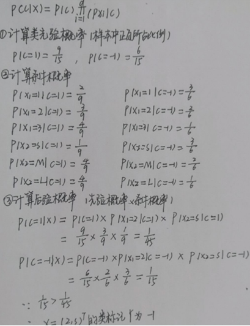
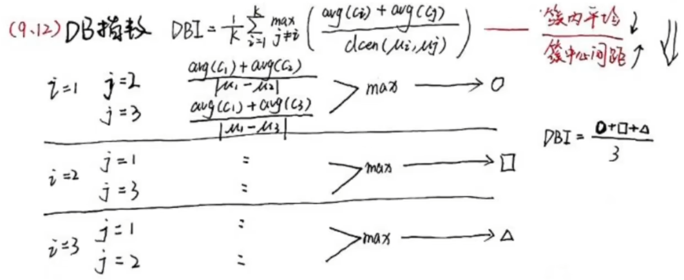

看学校ppt + 西瓜书的一些总结
1 绪论
什么是机器学习
- 通过算法使得机器能从大量数据中学习规律从而对新的样本做决策。（相当于构建一个映射函数）
机器学习研究的主要内容
- 在计算机上从数据中产生“模型”的算法，即“学习算法”。我们把经验数据提供给它，它就能基于这些数据产生模型。在面对新的情况时，模型会给我们提供相应的判断
常见的机器学习基本任务
- 分类：是定性输出，输出类型是离散数据，是离散变量预测
- 回归：是定量输出，输出类型是连续数据，是连续变量预测
常见的机器学习方法/类型(按学习形式分类)
- 监督学习：数据都有明确的标签，根据机器学习产生的模型可以将新数据分到一个明确的类或得到一个预测值。
- 无监督学习：数据没有标签，机器学习出的模型是从数据中提取出来的模式（提取决定性特征或者聚类等）
- 半监督学习：利用少量的标记样本和大量的未标记样本来改善模型的学习能力。位于无监督学习和监督学习之间。
几个常见的术语：数据集、样本(示例)、特征(属性)、样本空间(属性空间/输入空间)、特征向量、维数
- 一行记录就是一个样本，然后字段就是特征(属性)，样本空间就是轴名字为所有字段的一个空间，特征向量就是(字段1, 字段2, ...)，维数就是字段的个数。
独立同分布：是指随机过程中，任何时刻的取值都为随机变量，如果这些随机变量服从同一分布，并且互相独立，那么这些随机变量是独立同分布。
假设空间、版本空间、归纳偏好
假设空间：属性所有可能取值的组合。
版本空间：与训练集一致的“假设集合”。
求法：把跟正例不一致的假设删除，跟反例一至的假设删除。
归纳偏好：在学习过程中对某种类型假设的偏好，称为归纳偏好
- 例如，上面西瓜的例子求出的版本空间中有三个假设，它们都能满足训练集，但是面对新样本时，会产生不同的输出。所以选择特殊点的假设呢？还是选一般点的假设呢？
- 奥卡姆剃刀原则：选最简单的假设。
没有免费的午餐定理：在所有“问题”出现机会相同的前提下，所有算法的期望性能相同。
2 模型评估与选择
几个误差
- 训练误差：训练集上的训练所得模型与目标的差异
- 泛化误差：在未见过的数据集上训练所得模型与目标的差异
- 测试误差：测试集上的训练所得模型与目标的差异
过拟合/欠拟合
- 过拟合：为了得到一致假设而使假设变得过度严格（解决方法：模型剪枝/减少参数量/增加训练数据量/使用正则化约束）
- 欠拟合：模型没有很好地捕捉到数据特征，不能够很好地拟合数据（解决方法：模型复杂化/增加特征数/降低正则化约束）
评估方法
- K折交叉验证法：
- 你拿到一个数据集，先均分为k个互斥子集(k折)，依次将每一个子集作为测试集，剩余k-1个子集作为训练集，完成k次训练与测试，记录下每次的测试误差
- 进行完k次训练与测试后，对k个测试误差求均值。然后把均值测试误差最小的那个model选出来。它就是最优秀的model。
- 上述过程就是1次k折交叉验证。一般可以做p次，即p次k折交叉验证。
- 细节：采样记得分层采样，即如果男女比例3:7，那么train, test子集里的男女比率都要为3:7。
- 留一法：若数据集有m个样本，那么就拆为m份，每次只有一个样本作为测试集，进行m次。
- 留出法：
- 无脑。就是选一部分作为训练集，另一部分作为测试集。结束。
- 自助法：
- 若数据集\(D\)有m个样本，那么进行m次有放回采样，每次采样到的样本copy到\(D_1\)中。
- 采样m次后，将\(D_1\)作为训练集，\(D/D_1\)作为测试集，结束。
- 因为从概率上来讲，有\(\frac{1}{e}=36.8\%\)样本一次都不会被采样过，所以\(D/D_1\)作为测试集从概率上来讲就是\(36.8\%\)的数据集。比较不错。\(\lim_{m\mapsto\infty}\left(1-\frac{1}{m}\right)^m\mapsto\frac{1}{e}\approx0.368\)
- 优缺点：
- 留出法简单易懂计算量小，但是结果可信度不算很高；K折交叉验证法可信度高，但计算量大；留出法在小数据集时表现较好，但是引入了估计偏差，但大数据集时非常明显。
- K折交叉验证法：
性能度量1️⃣
回归问题一般用MSE(均方误差)：\(E(f;D)={\frac{1}{m}}\sum_{i=1}^{m}\left(f\left(x_{i}\right)-y_{i}\right)^{2}\)
分类问题一般用错误率和精度。除此之外，还有P/R/F1/\(F_\beta\)
正例(Positive sample)，反例(Negative sample)
查准率(P)：你查的正例里对了多少？\(\frac{TP}{TP + FP}\)
查全率(R)：正例都被查出来了吗？\(\frac{TP}{TP + FN}\)
F1：是P和R的调和平均。\(\frac{1}{F1} = \frac{1}{2}(\frac{1}{P} + \frac{1}{R})\)。范围0 ~ 1，越靠近1越好
\(F_\beta\)：\(\frac{1}{F_\beta} = \frac{1}{1 + \beta^2}(\frac{1}{P} + \frac{\beta^2}{R})\)。\(\beta>1\)时，认为较注重R指标
宏P、宏R、宏F1：就是做p次实验，然后宏P=\(\frac{1}{p}\sum P_i\)，宏R=\(\frac{1}{p}\sum R_i\)，宏F1是宏P和宏R的调和平均。
微P、微R、微F1：就是做p次实验，先得到\(\overline{TP}, \overline{FN}, \overline{FP}, \overline{TN}\)，然后算P、R、F1，就是微P微R微F1。
混淆矩阵：就是上面那个表
性能度量2️⃣
PR曲线：
- 绘制过程：阈值从1降到0，不同阈值会得到不同的混淆矩阵，对于每个混淆矩阵计算P、R。然后标点上去。
- 评估好坏：如果把别人包住就比别人好，如果面积比别人大就比别人好，如果BEP点(P=R=BEP)比别人大就比别人好
ROC曲线：
- 绘制过程：阈值从1降到0，不同阈值会得到不同的混淆矩阵，对于每个混淆矩阵计算TPR、FRR。然后标点上去。
- 意义：TPR是正例中预测正确的比率，FPR是负类中预测错误的比率
- 评估好坏：如果把别人抱住就比别人好，如果面积比别人大就比别人好。
AUC：area under curve，曲线下的面积
代价敏感错误率：就是原本计算错误率的时候，每个样本的权重是1。但是代价敏感错误率就是每个样本的权重自己去定。
偏差和方差
对于特征\(x_1, x_2, \cdots, x_m\)，上帝视角存在标准映射：\(f(X)\)。
那么在得到数据集的过程中，由于数据集是采样得到的，假设采样到的特征为\(x_1, x_2, \cdots, x_m\)，采样得到的标签为\(y_1, y_2, \cdots, y_m\)。因为采样存在噪声，所以有：\(y_i = f(x_i) + \varepsilon_i\)。
噪声\(\varepsilon\)是个随机变量，假设其\(E(\varepsilon) = 0, D(\varepsilon) = \sigma^2\)
假设我们训练得到的模型为\(\tilde{f}(X)\)，模型的期望为\(E(\tilde{f}(X))\)。
那么模型的泛化误差： \[ \begin{align*} E(Y - \tilde{f}(X)) &= E(f(X) + \varepsilon - \tilde{f}(X)) \\ &= E(f(X) - E(\tilde{f}(X)) + E(\tilde{f}(X)) - \tilde{f}(X) + \varepsilon) \\ &= [f(X) - E(\tilde{f}(X))]^2 + E[\tilde{f}(X) - E(\tilde{f}(X))]^2 + E(\varepsilon^2) \\ &= \text{偏差} + \text{方差} + \sigma^2\text{(误差)} \end{align*} \]
可以看出，偏差就是标准标签与模型期望之间的差距；方差就是模型预测与其期望的偏离程度；误差就是一个定值。
与欠拟合/过拟合之间的关系，当欠拟合时，偏差很大（因为根本拟合不了标准标签），方差小（因为都没有拟合什么数据）；当过拟合时，偏差很小，但是方差变大（因为拟合了过多的噪声）。
补充
- 二项分布的共轭分布是 Beta 分布
- 多项式分布的共轭分布是 Dirichlet 分布
3 线性模型
线性回归
线性回归的形式：\(f(\textbf{x})=\textbf{w}^\mathrm{T}\textbf{x} + b\)
基于MSE均方误差求解出线性回归模型的方法叫做最小二乘法。
求解目标，最小化\(F\)： \[ F = \sum_{i=1}^{m}\left(f(x_i) - y_i\right)^2 = \sum_{i=1}^{m}\left(wx_i + b - y_i\right)^2 \]
求解方法（线性代数的方法）：

最小二乘法的等效回归方法是线性均值和正态误差的最大似然回归。
逻辑回归（对数几率回归）
本质 loss 是用的最大似然估计，也可以说交叉熵。
就是把线性回归的结果，套一层sigmoid函数，使得输出的是一个0 ~ 1的值，可用来做二分类问题。
逻辑回归的形式：\(y={\frac{1}{1+e^{-(w^{\mathrm{T}}x+b)}}}\)
求解目标，最大化F：
求解方法：最大似然法
线性判别分析（LDA）
- 思想就是弄出一条线\(w^\mathrm{T}x\)，使得同类投影到这条线的距离尽可能近，不同类投影到这条线距离尽可能远。
- 从数学上，就是最大化这个东西：\(J={\frac{w^{\textsf{T}}\mathrm{S}_{b}w}{w^{\mathrm{T}}\mathrm{S}_{w}w}}\)
- \(S_b\)：类间散度矩阵
- \(S_w\)：类内散度矩阵
多分类方法
OvO：两两配对产生\(\frac{N(N-1)}{2}\)个结果，投票。（需要\(\frac{N(N-1)}{2}\)个分类器）
OvR：依次将每个类作为正类，其余作为负类。若只有一个分类器输出正类，其余都为负类，则预测结果就为输出的那个正类。若有多个正类输出，选择置信度最大的类别标记。（需要\(N\)个分类器）
MvM：
MvM就是在每个分类器中，将若干个类作为正类，若干个类作为负类。MvM中，最常见的一种分类技术叫“纠错输出码"(ECOC)
具体看下面这幅图，一目了然。
上面这幅图中，一共有5个分类器，4个类别。第一个分类器\(f_1\)规定\(C_2\)为正类，\(C_1, C_3, C_4\)为负类。然后对于测试示例，经过5个分类器，跑出了(-1, -1, +1, -1, +1)这个预测向量。记此向量为x。那么x与\(C_1\)的向量(-1, +1, -1, +1, +1)的欧氏距离是\(2\sqrt{3}\)，海明距离(即不同的个数)是3。
通过观察，可以发现预测向量与\(C_3\)的欧氏距离和海明距离均最小，那么就判定该样例属于\(C_3\)。
可以发现，EOOC编码越长(分类器越多)，那么纠错能力越强(鲁棒性越好)。
而且可以发现，两个类别\(C_i, C_j\)的编码距离越远越好，这样子区分度就越高。所以我们称任意俩类别之间编码距离最远的编码方式为理论最优编码。
类别不平衡
- 欠采样：直接丢弃过多类别的样本，使得不同类别的样本数均衡
- 代表算法：EasyEnsemble
- 过采样：增加过少类别的样本，使得不同类别的样本数均衡
- 代表算法：SMOTE（通过对训练集过少类别的样本进行插值来生成新样本）
- 直接对初始过少类别样本进行重复采样会造成严重的过拟合现象
- 再缩放：根据 \(\frac{m+}{m-}\) 对预测值进行调整
- 欠采样：直接丢弃过多类别的样本，使得不同类别的样本数均衡
4 决策树
不会受到数据归一化的影响。
决策树学习的关键在于如何选择最优划分属性，一般而言，随着划分过程不断进行，我们希望决策树的分支节点所包含的样本尽可能属于同一类别。
经典的属性划分方法有：信息增益ID3、增益率C4.5、基尼指数CART。
信息量：\(I(x) = -\log P(x)\)。一个事件\(x\)发送的概率越大，那么其蕴含的信息越少，即信息量越小
信息熵：随机变量的信息量的期望，\(H(X) = E(I(X)) = E(-\log P(X)) = -\sum p(x)\log p(x)\)。如果随机变量蕴含的值越多，那么就越混乱，其信息熵就越大。
三种建树方法
信息增益ID3
先计算数据集\(D\)得到信息熵\(H(D) = -\sum p_k \cdot \log p_k\)
- \(p_k\)是第k个label占全部label的比例。这个定义很好理解，如果全部样本都是同一个label，那么信息熵就是0。如果有很多个label，那么信息熵就比较大，说明混乱程序比较高，不确定性程度高。
我们需要找到一个属性\(A\)，使得\(G(D, A) = H(D) - H(D|A)\)最大，即划分后的信息熵尽可能小。
- \(G(D, A)\)叫做信息增益
- \(H(D|A)\)是用\(A\)去划分数据集\(D\)之后得到的信息熵：\(H(D | A) = \sum_{i=1}^{C} \frac{cnt_{D_i}}{cnt_D} \cdot H(D_i)\)
划分后，对划分后新得到的数据集对相同的事情。递归结束条件为当前数据集label全一样，或者属性集空了，或者数据集在当前属性的label'都一样。
伪代码
增益率C4.5
上面的信息增益算法其实我们没考虑到一个东西，就是不同属性天生包含的类别数不同。即属性自身固有的“混乱”程度不一样。
直接给出数学定义，\(G(D, A)\)是信息增益(Gain)，\(Gr(D, A)\)是增益率(Gain ratio) \[ \begin{align*} &G(D, A) = H(D) - H(D | A) \\ &Gr(D, A) = \frac{G(D, A)}{H(A)} \\ &H(A) = -\sum p_k \log p_k \end{align*} \]
所以C4.5算法就说：先选出信息增益高于平均信息增益的属性，然后再在这些属性中选出增益率最高的属性作为划分属性！基尼指数CART
基尼指数CART
除了用熵去衡量数据集“的纯度”，还可以用基尼指数去衡量数据集的纯度。
数据集\(D\)的纯度可用基尼值(Gini)来衡量：
\[ Gn(D) = \sum_{i=1}^{C}\sum_{j=1}^{C}p_ip_j = 1 - \sum_{k=1}^{C}p_k^2, \quad i \ne j \]
可以发现，基于指数反映了从\(D\)中随机抽取两个样本，其类别lable不一致的概率。基尼系数越小，数据集纯度越高，即类别数越少。那么用属性A划分后的基尼指数是多少？ \[ Gn(D, A) = \sum_{k=1}^{C} \frac{cnt_{D_i}}{cnt_D}Gn(D_i) \]
CART算法就是利用基尼指数来建决策树的算法，它每次看看用哪个属性划分后的基尼指数最小，就用它划分。
CART算法直接算的 \(Gn(D | A)\) 然后取的最小的那个。总之跟笔记写的不太一样，建议去看真题复习一下。
预剪枝、后剪枝
- 因为决策树是个强方差的算法，所以很容易出现过拟合。为了解决过拟合，就有预剪枝和后剪枝两种方法。
- 预剪枝：
- 就是在划分节点的时候，拿验证集跑一跑，如果划分后效果反而不如不划分，那么就不继续划分该节点了，直接连个叶子节点上去，类别就是该节点内人数最多的类别。（从上到下）
- 降低过拟合风险，训练速度快；但是有欠拟合风险
- （此时引入了一个东西叫做“验证集”，他与测试集的区别主要是，测试集在训练的全程对于学习器来说是不可见的。而验证集的作用是辅助训练。）
- 后剪枝：
- 就是先用算法生成一棵决策树，然后从下到上依次考察是否将节点替换为叶子节点会更优，如果更优，就替换
- 比预剪枝保留了更多分支，欠拟合风险较小；但是训练时间大
连续与缺失值处理
- 连续
- 就拿身高这个属性举例，假设样本中，有n个不同的身高，那么划分点就有n个（就是先排序，然后俩俩身高的中点就是划分点），每确定一个划分点t，其实就可以算出按照t去划分身高这个属性之后得到的信息增益\(G(D, A, t)\)。以用信息增益算法建树举例，那么划分身高这个属性的时候，就是找一个划分点t，使得\(H(D) - G(D, A, t)\)最大即可。
- 需要注意的是，连续值与离散值有一个地方不同就是，离散值的属性如果用过，那么后面就不会再用来划分了。但是连续值的属性可以再次使用，比如第一次划分是身高是否低于180，进入子节点后可以继续用身高这个属性划分，身高是否低于160。
- 缺失值
- 最简单的方法当然就是丢弃有缺失值的样本，或者用众数/平均数去填充缺失值。但是这么做有些暴力。
- 比较复杂的方法就是划分建树过程中，给每个样本一个全局变量\(w_i\)，为自己的权重，初始为1。对于那些属性\(A\)无缺失的样本呢，直接划分到对应子集中，对应进入的权重为\(w_i\)；对于那些属性\(A\)缺失的样本，就等无缺失的样本都划分完后，然后划分到每一个子集中，对应进入的权重变为\(w_i \cdot \frac{\sum\text{子集中样本的}w_i}{\sum\text{当前属性无缺失的样本的}w_i}\)。同时将\(\frac{\sum\text{子集中样本的}w_i}{\sum\text{当前属性无缺失的样本的}w_i}\)记录下来作为该子节点的权重。
- 在验证的时候，就给每一个要验证的样本带一个权重\(w\)，初始值为1。假设走到某个属性A，若该样本在属性A上无缺失，则进入到对应子节点，权重\(w\)不变；若有缺失，则每个子集都进入，但是进入的权重要乘对应子节点的权重。那么最终若进入到多个叶子节点，选择最终权重最大的那个叶子节点的类别判定为该样本的label。
- 连续
多变量决策树
传统的单变量决策树，其决策边界都是与轴平行的：

但如果我决策树的节点换为多变量的，那么我的决策边界就可以变为线性，更为灵活：
5 神经网络
几个网络拓扑的概念
单层感知机
- 只有输入层和输出层，输出层是M-P神经元，也称为阈值逻辑单元，负责加一个偏置项和经过激活函数，得到输出。
- 激活函数有：sgn阶跃函数，sigmoid函数
- （单层感知机是线性模式，但神经网络以及多层感知机不是）
多层感知机(MLP)
- 多层感知机（MLP）是一种前向结构的人工神经网络，包含输入层、输出层及多个隐藏层。除了输入层，隐藏层和输出层的每个神经元都有加一个偏置项和经过激活函数的功能。
多层前馈神经网络
- 定义：每层神经元与下一层神经元全互联，神经元之间不存在同层连接也不存在跨层连接。
- 前馈：网络拓扑结构不存在环或回路。
- 前向传播：从输入层开始，将上一层的输出作为下一层的输入，并计算下一层的输出，一直到运算到输出层为止
反向传播BP
西瓜书上的例子和手推过程：
几个其它概念
解决BP神经网络过拟合手段
早停：将数据集分为训练集和验证集，当训练集误差降低但验证集误差升高时，停止训练。
正则化：就是在目标误差函数中加一项用于描述网络复杂度的部分，例如： \[ E=\lambda{\frac{1}{m}}\sum_{k=1}^{m}E_{k}+(1-\lambda)\sum_{i}w_{i}^{2} \]
\(E_k\)为第k个训练样例上的误差。这么搞的话网络将会偏好较小的权重\(w_i\)，从而使网络输出更为“光滑”，缓解过拟合现象。
L2正则化：对绝对值较大的给予较重乘法，且处处可导，方便计算
L1正则化：对所有权重基于相同力度乘法，因此较小权重乘法后就变为0了，从而达到稀疏化的目的。
全局最小与局部极小
- 全局最小：在函数的整个定义域中，如果一个点的函数值是所有可行点中最小的，那么这个点就是一个全局最小点、
- 局部极小：在函数的定义域内的某个区域中，如果一个点的函数值不大于其邻近点的函数值，那么这个点就是一个局部极小点。
梯度爆炸：梯度由于误差累计变得非常大，导致网络权重大幅更新甚至权重值溢出
梯度消失（sigmoid / tanh，因为它们的导数图像都形如正态分布）：梯度非常小甚至趋于0，导致网络训练不佳甚至无法训练。
6 支持向量机
几个定义
超平面：n维线性空间中维度为n-1的子空间，它可以把n维线性空间分割为不相交的两部分
支持向量：距离超平面最近的且满足一定条件的几个训练样本点
间隔：两个异类支持向量到超平面的距离之和
SVM原理：m个样本分为两类，每个样本的数据维度为n维，然后我们需要找出一个n-1维的超平面，来区别这两类样本，使得间隔最大。
SVM求解目标推导：
核函数
- 我们知道，升维可以使得原本不可分的数据变得可分。但是通过维度转换函数去升维很困难，因为维度转换函数很难找。
- 而通过前面的分析，原优化问题的对偶问题的最优解仅由支持向量的点积结果决定。
- 而核函数的功能就是得到转换后空间中向量点积。所以，我们只需找到一个恰当的核函数即可。
- 核函数定义：将原始空间中的向量作为输入向量，并返回转换后的数据空间中向量的点积的函数称为核函数。
- 常见的核函数：线性核、多项式核、高斯核、拉普拉斯核、sigmoid核
软间隔
- 软间隔 SVM 的阈值趋于无穷，则只要最佳分类超平面存在，它就能将所有数据正确分类。
支持向量回归（SVR）
7 贝叶斯分类器
贝叶斯决策论
是个理论框架，不是一个实际的模型。
其实，就是拿到一个样本\(x\)，然后对于所有类别\(c \in \mathcal{Y}\)，计算出最小的那个\(R(c | x)\)，对应的\(c\)就是\(x\)分到的类别。
如何计算条件风险\(R(c | x)\)呢？如图公式即可，但是容易发现，\(P(c_j | x)\)这个概率我们是不知道的。
我们的机器学习，其实本质上就是在求\(P(c_j | x)\)。
所以这是个理论框架，它反应了学习性能的理论上限。
先验/后验
- 先验概率就是通过历史经验来确定事件。
- 后验概率就是通过结果来推测原因。
- 贝叶斯公式：\(P(c | x) = \frac{P(c) \cdot P(x | c)}{P(x)}\)
- P(c)是先验，P(x|c)是条件概率(或者叫似然)，P(x)叫证据。
生成式/判别式模型
判别式模型：直接对 P(c|x)建模（SVM、神经网络、决策树）
生成式模型：对 P(x, c) 建模（贝叶斯分类器）
从前面的知识可以知道，难点就是在于求条件概率 \(P(x|c)\) 。所以历史上就出现了两派：频率主义学派和贝叶斯学派。频率主义学派就认为 \(P(x | c)\) 潜在的是服从某种分布的。所以我们只需要根据现有的数据不断去估计条件概率，从而求出后验。
频率主义学派/贝叶斯学派 和前面的 判别式生成式模型 没有必然联系。两个概念。机器学习这门课我看到的算法，按照学派分类，应该都是频率主义学派。但是按照什么式来分类，大部分是判别式，小部分是生成式。
举个例子：
极大似然估计
- 也是一种理论框架，不是实际的模型。没有考虑先验分布。
- 对于我们不是要求\(P(x|c)\)嘛，即要求\(P(x|c)\)满足什么分布。不妨假设\(P(x|c)\)具有确定的概率分布形式，由\(\theta_c\)唯一确定。所以我们的任务就是利用数据集\(D\)求出\(\theta_C\)。
- 那么\(D\)中所有类别为c的样本出现的概率：\(\prod_{x \in D_c} P(x | \theta_c)\)
- 我们就是找到一个\(\theta_c\)，使得上面这个概率最大。这就是最大似然。
- 为了方便，取个log：\(f = \sum_{x \in D_c} \log P(x | \theta_c)\)。
- 注意，上面的参数\(\theta_c\)是指标针对\(D_c\)的，每类数据集合的参数不一样。
朴素贝叶斯分类器
基于先验推后验，可解决有监督学习问题。
由贝叶斯公式，得：\(P(c|x) = \frac{P(c) \cdot P(x | c)}{P(x)}\)。
不妨假设\(x\)的各个属性相互独立，且若为属性连续则假设\(P(x_i | c)\)满足正态分布。
那么可得：\(P(c|x) = \frac{P(c)}{P(x)}\prod_{i=1}^d P(x_i | c)\)
对于不同类别\(c\)，\(P(x)\)一样，所以只需要计算\(P(c) \cdot \prod_{i=1}^d P(x_i|c)\)谁大就行，最大的对应的c就是其类别。
这里一定要用连乘噢！回去看看真题上的例子复习一下，易错。
下面是一个计算的例子：

朴素贝叶斯分类器的改进
- 因为朴素贝叶斯分类器的假设过于强，所以半朴素贝叶斯就是说对这个假设进行一定程序的放松。经典算法有：SPODE、TAN、AODE。
- 贝叶斯网：借助DAG来描述属性之间的依赖关系。
- EM算法：我们知道，知道了数据概率，可以去估计背后的数据分布；知道了数据分布，可以推测数据概率。所以EM算法中的E就是去估计样本所属类别的概率，M就是用估计的分类来更新分布的参数。循环往复，蛋生鸡鸡生蛋，直到分布收敛。
- 经典的无监督分类模型。
- 对初始化敏感。
8 集成学习
好而不同
- 要获得好的集成，个体学习器应该“好而不同”。个体学习器性能不能太坏（至少50%正确率），且学习器之间要有差异。
- 但是“准确性”与“多样性”之间存在冲突。准确性增高后就要牺牲掉一些多样性。
两类集成学习方法
个体学习器存在强依赖关系（序列化方法）
Boosting框架（AdaBoost）
上图就是Boosting框架的思路：对于数据集1里的每个样本有一个权重，初始都一样。然后通过基学习算法得到一个模型1。模型1做错的样本加大其权重；做对的样本减小其权重。然后从数据集1中采样得到数据集2。再做相同的事情，以此类推。直到得到T个模型。最后将这T个弱分类器加权线性组合为强分类器。
个体学习器不存在强依赖关系（并行化方法）‘’
Bagging框架（Random forest）
对数据集进行n次自助采样，得到n个新的数据集。对于每个数据集训练用基学习算法训练出一个模型。对于分类任务，通常采用多数投票或平均概率决定最终类别；对于回归任务，采用平均值作为集成模型的预测结果。
算法伪代码：
- \(\mathcal{D_{bs}}\)是自助采样出来的数据集。
随机森林
- 如果以决策树算法作为基学习算法的集成学习就叫做随机森林。
- 随机森林的基学习器之间的差异由两方面带来，第一来自样本扰动（自助采样带来的训练集不一样），第二是属性扰动（决策树中的每个节点划分时只考虑一个属性子集）。
结合策略
- 平均法、投票法
- 学习法
- 先从初始数据集中训练出初级学习器，然后“生成”一个新数据集用于训练次级学习器。在新数据集中，经过初级学习器的输出被当做输入特征，初始样本的标记仍被当做样本标记。这样去训练好一个次级学习器。然后对于预测一个样本，先得到各个初级学习器的输出，然后把这个输出丢进次级学习器中，得到预测标签输出。
多样性增强
- 我们知道集成学习的性能由准确率和多样性决定。所以提升多样性的方法有如下几种：
- 数据样本扰动（例如自助采样）
- 输入属性扰动（例如随机森林）
- 输出表示扰动（例如利用ECOC将多分类输出转换为一系列二分类输出）
- 算法参数扰动（就基学习算法的参数进行设置，产生差异较大的基学习器）
- 我们知道集成学习的性能由准确率和多样性决定。所以提升多样性的方法有如下几种：
9 聚类
概念：聚类是一种无监督算法。它将数据集中的样本划分为若干个不相交的子集，称为簇。
性能度量
目的：评估聚类的好坏、确定优化的目标
结论：簇内相似度越高越好，簇间相似度越低越好
外部指标（与标准聚类模型效果对比）：
- 这仨指标都是[0, 1]，越高越好
内部指标：
avg(C)是类内的平均距离。diam(C)是类内的最大距离。dmin(C1, C2)是俩类间的最小距离。dcen(C1, C2)是俩类间的中心之间的距离。

距离计算
前面我们用了一些性能指标去度量聚类的好坏，其中用到了“距离“。那么距离也需要一个度量方法，才能够进行计算。
距离度量满足直递性，非距离度量不满足（例如相似度）
当属性为有序的时候，可以用闵可夫斯基距离（下图），无序属性可采用VDM距离。
K-means
- 算法描述：
- 随机选取样本作为初始均值向量（初始值：k 的值【即几个簇】）
- 分别计算每个样本点到均值向量的距离，距离哪个近就属于哪簇
- 通过2计算出来的划分，重新计算均值向量（直接对簇内点取平均）
- 重复直到达到停止指标
- 仔细看图片，很清晰了
- 优点就是简单快速。缺点事先得确定k值且对初始值敏感，对孤立点敏感。
- 算法描述：
其它一些方法：
- 学习向量量化：是监督学习，知道了每个样本的标签。这个算法返回的是每个簇最终的原型向量。每个类别的原型向量不是简单的均值向量，而是考虑了附近同/异类点的影响。
- 高斯混合聚类：采用概率模型来表达聚类原型。
- 密度聚类（DBSCAN）：基于密度的聚类，假设聚类结构能通过样本分布的紧密程序来决定。
- 层次聚类（AGNES）：试图在不同层次对数据集进行划分，从而形成树形的聚类结构。（自底向上真题上有一道例题，要去复习，易错！）
10 降维与度量学习
KNN
- 这里的k是指要参考k个与自己最近的点，k-means里的k是簇的个数。
- （最小距离分类器算法：通过求出未知类别向量 X 到事先已知的各类别（如A，B，C 等）中心向量的距离 D，然后将待分类的向量 X 归结为这些距离中最小的那一类的分类方法）
- （k近邻属于分类算法，样本多且典型性不好容易造成分类错误，样本分布对其影响不大。但是样本分布对聚类算法的影响较大）
- 它是一个监督学习。需要很多有标签的数据。这样新数据来的时候才能做预测。
- 算法流程描述：
- 计算测试数据与各个训练数据之间的距离
- 对距离从小到大进行排序
- 选取距离最小的k个点
- 确定前k个点类别出现概率
- 出现概率最高的类别作为预测分类
维数灾难：数据属性维数过高，出现数据样本系数、距离因为维数过高从而计算困难的问题，称为维数灾难。解决方法——降维。
降维方法：
PCA主成分分析（线性）
思想：简单来说就是第一阶段找了一个新的坐标系来表示数据，这个新的坐标系能最大限度的看出每个轴上的数据变化大小，第二阶段在新坐标系下取前k个变化最大的轴上的数据，从而实现降维。
算法伪代码：
- 将数据投影到W坐标系下即可：\(X' = WX\)
核化线性降维：对于线性不可分数据，我们需要先利用核技巧先升维。然后再利用PCA进行降维。
流形学习：借鉴了拓扑流形概念的降维方法。
度量学习